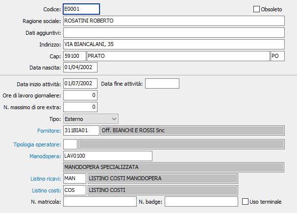

Operatori
La tabella consente di gestire gli operatori siano essi interni (quindi proprio personale) che esterni (quindi legati a fornitori di servizi).
La manutenzione è suddivisa in due parti: la prima parte che comprende i dati anagrafici dell’operatore, e la seconda parte che comprende i dati di natura gestionale.

CODICE: codice alfanumerico di 8 caratteri per individuare l’operatore in esame. Sul campo sono attive le funzioni di ricerca (F9) sulla tabella stessa.
RAGIONE SOCIALE: campo alfanumerico di 50 caratteri per descrivere l’ operatore in esame.
DATI AGGIUNTIVI: campo alfanumerico di 50 caratteri per inserire eventuali dati aggiuntivi riguardanti l’ operatore in esame.
INDIRIZZO: campo alfanumerico di 50 caratteri per inserire l’indirizzo dell’operatore in esame.
CAP: campo numerico per inserire il cap relativo all’indirizzo dell’operatore in esame.
LOCALITÀ: campo di 50 caratteri per descrivere la città dell’indirizzo dell’operatore in esame.
PROVINCIA: è la provincia relativa alla residenza dell’operatore.
DATA DI NASCITA: è la data di nascita dell’ operatore.
DATA INIZIO ATTIVITÀ: è la data di inizio attività dell’operatore.
DATA FINE ATTIVITÀ: è la data di fine attività dell’operatore.
ORE DI LAVORO GIORNALIERE: è il numero delle ore giornaliere lavorative previste per l’operatore; consigliabile utilizzare
N. MASSIMO DI ORE EXTRA: indica il numero di ore straordinarie massime che l’operatore può eseguire al giorno.
TIPO: combo box che indica il tipo dell’ operatore se esso è interno o esterno alla propria attività. Valori ammessi: Interno, Esterno.
FORNITORE: codice alfanumerico di 8 caratteri per identificare il fornitore. Questo campo è significativo nel caso in cui l’ operatore fosse esterno, e indica il fornitore a cui fa capo l’ operatore stesso.
TIPOLOGIA OPERATORE: codice alfanumerico di 3 caratteri, presente nella tabella dei Tipi operatore, che consente di definire la tipologia dell’ operatore. Sul campo sono attive le funzioni di ricerca (F9) e manutenzione (CTRL+W) sulla tabella stessa.
MANODOPERA: codice alfanumerico di 22 caratteri che indica il tipo di attività prestata dall’operatore. Sul campo sono attive le funzioni di ricerca (F9) sulla tabella Articoli, limitata ai soli articoli di tipo “Manodopera”.
LISTINO RICAVI: eventuale codice di listino di vendita, utilizzato in movimentazione manodopera per reperire la tariffa relativa all'operatore. Sul campo sono attive le funzioni di ricerca (F9) e manutenzione listini (CTRL+W).
LISTINO COSTI: eventuale codice di listino di costi, utilizzato in movimentazione manodopera per reperire il costo relativo all'operatore. Sul campo sono attive le funzioni di ricerca (F9) e manutenzione listini (CTRL+W).
N. MATRICOLA: Campo alfanumerico di 20 caratteri, presente nella tabella dei Tipi operatore, che contiene l’eventuale numero di matricola dell’ operatore.
N. BADGE: Campo numerico per definire l’eventuale numero del badge dell’operatore.
USO TERMINALE: abilita la gestione del terminale da parte dell’ operatore, casella con segno di spunta.
OBSOLETO: flag attivabile dall’utente per inibire il possibile utilizzo dell’elemento di tabella in esame nelle successive transazioni.